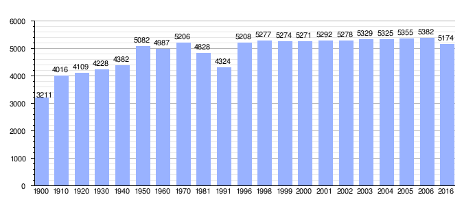

La fundación medieval de esta localidad tiene sus prolegómenos en la rendición de los árabes de Setenil en 1484 a los Reyes Católicos. Algunos de los vecinos solicitaron al rey Fernando un permiso para quedarse a vivir en las proximidades de aquel lugar y no en el propio emplazamiento, dado que a pesar de rendir vasallaje a los nuevos dueños recibían un trato vejatorio por parte de los cristianos de Setenil. De este modo los mudéjares acabaron residiendo en el valle de los manantiales de Fuente Grande, levantando un poblado que se denominó, como hoy, Alcalá del Valle.
Alcalá del Valle dispone de un clima especial, al estar en una depresión natural surcada de arroyos, templando el clima propio de la Sierra de Cádiz que se forma por la unión de las componentes Atlántica y Mediterránea junto a la que aporta la altitud y la entrada desde el Estrecho de Gibraltar de frentes húmedos.
Entre la población se habla del “Solano”, viento conocido en otros lugares como “Levante”, que sopla de vez en cuando y que por su supuesto efecto psicológico acuña la frase “estar asolanao”.
Situada en el extremo nororiental de la provincia de Cádiz, Alcalá del Valle se encuentra enclavada en la zona occidental de la Serranía de Ronda, a cuya comarca natural pertenece, a 24 kilómetros de Ronda y a 155 kilómetros de Cádiz. Se ubica vecina a la provincia de Málaga, de la que formó parte hasta 1833, y a cuyo obispado perteneció hasta 1980, siendo el límite efectivo de la provincia de Cádiz con ésta.
Esta población es la última de la conocida Ruta de los pueblos blancos.
Aunque el emplazamiento está ocupado desde la prehistoria, las primeras referencias a Alcalá como población se remontan a finales del siglo XV cuando tras la toma cristiana de Setenil de las Bodegas en 1484, una parte de la población musulmana decide permanecer bajo dominio cristiano, solicitando el permiso a los Reyes Católicos para fundar una nueva localidad en la que mantendrían su religión, estilo de vida y costumbres.
Gráfica de evolución demográfica de Alcalá del Valle entre 1900 y 2016
